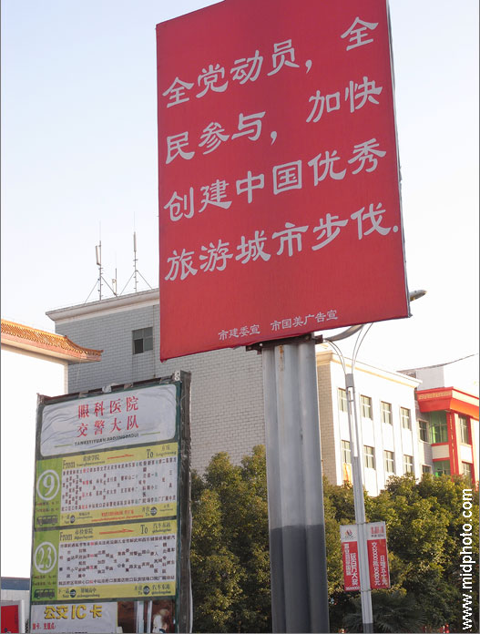

老杨旅行系列（1）
旅行的意义
by 长沙杨飞
今天又有一位朋友让我推荐旅游图书，因为她觉得我一直是超级旅游爱好者。其实这是一个误会，因为我已经好些年不出门了。十几年前，我确实曾狠狠地狂奔了一段时间，从上海和香港的繁华一直玩到慕士塔格雪山顶峰的荒凉。不过从此之后我就基本洗手不干了。我也停止了旅游摄影和写作，拒绝再为旅游业充当枪手。如果你要问为啥，请先看看下面这个图片小故事。

2008年11月和12月间我展开了一次前所未有的孤独旅行，一个人花了19天从北京骑单车到长沙。在路过河南省驻马店市的时候，我看到了一个相当雷人的口号：“全党动员，全民参与，加快创建中国优秀旅游城市步伐”。这和1958年大炼钢铁的口号挺相似的。驻马店实在是没有多少旅游景点，为啥也要制造旅游城市呢？
这个标语表明了大多数人对旅游的态度：这是一个能带来无尽金钱的完全环保的无烟工业。驻马店的口号形象地表达了中国乃至全世界每个地方的欲望，强行挖地三尺，大力发展旅游。
从某一个村子（或城市）的角度出发，旅游确实能带来财富。但从全局来看是否也这样？假如全中国只有十个城市，这十个城市的人都不停地互相旅游，是否会增加全中国的财富？假如全球只有十个国家，这十个国家的人都不停地互相旅游，是否会增加全球的财富？显然答案为否，不然我们将得出一个荒谬的结论：每天不用工作，天天旅游就能丰衣足食。从全局的角度出发，旅游并不能带来财富，它只是转移财富。
旅游真的是完全没有污染的产业吗？我并不这样认为：
第一，旅游需要从A地到B地。不论是坐飞机还是汽车都需消耗大量的石油，产生有毒废气和温室气体。
第二，旅游开发需要大量的基础建设，包括道路、车站、机场以及宾馆酒店。这些都离不开钢材水泥，这些重工业产品的生产正是环境污染的最大因素。旅游者在当地的活动也消耗大量能源水电等。
第三，无论如何注意保护，在旅游产业规模化之后，必定会对当地的生态环境造成破坏。无论九寨沟当局如何努力，也无法避免九寨的水质逐渐劣化；无论敦煌旅游当局如何努力，也无法避免敦煌壁画加速剥离。当旅游形成产业，各景点人潮汹涌之时，其场景就象《成吉思汗的马队》曾描写的：一群群的入侵者正在大肆破坏，到处留下成堆的垃圾，他们的到来导致了对世界上所有美好事物的系统破坏。
旅游无污染只是一个表面现象，我们从整个产业链来分析就会发现完全不是那么回事。就象电动汽车，其本身的使用没有任何污染，但从整个产业链分析，从汽车和动力电池的制造，到电力的生产到远距离输送，汽车从内燃机改用电动机不能解决其污染环境的任何问题，只是污染的转移而已。
但旅游从业者和旅游开发商是不会从全局去思考问题的。自私是人类的天性，当个体和群体利益发生冲突，个体的利益总是第一位的。这里的个体包括个人、单个的产业，单个的城市以及单个的国家。只要是公共物品就不会有人去爱护，公共厕所永远最脏。石油钢铁水泥污染环境，但污染了谁的环境？除非只污染旅游业者家里客厅的那团空气，否则他们不会考虑环境问题。只要金钱能从快速旅游者口袋里转移到他们的口袋里就行。难怪有人说旅游开发是一种帝国主义行为，开发商从事的是一场掠夺性事业，他们以最小量的投入，试图获取最大量的收益，并要在最短的时间内完成。
原始的小径，山民的小屋，这当然无法支持产业化的旅游，但大规模的旅游开发又导致许多美好事物的消失，我们似乎陷入一个两难的怪圈。同时消失的还有山民貌似纯朴的心灵和笑容。我自己也是很矛盾的。一方面我对国内大多数景点的伪真实没有任何兴趣，另一方面又希望贫穷的村民能过上富裕的生活。让山民们保持原始与落后，以便让城市的游客玩赏从而得到心灵的升华，这是一种很自私的想法。要富大家一起富。如何让山民富裕而保持传统，如何发展旅游而不破坏环境，这是两个大难题。
面对冷冰冰的摩天大楼和高速公路，大自然的退化和人性的丧失，城市里一种对原始的痴迷日渐成长。城市森林的居民夺门而出，四处寻找一种在他们日常生活中缺乏的原始与真实（authenticity)。乡村的人民也通过制造他们自己文化的仿真品来满足他们的这一需求。不管是山里小镇的节日，还是城里的京剧表演，都变成了与市场交换密切相连，虚假和表面的东西。这是一种搬演的伪真实（staged
authenticity)，观众和演员却沉醉其间，乐此不疲。当山里的舞蹈脱离了节日为游客天天表演，当城里的京剧没有了群众参与而专为游客演出，这些传统的舞蹈和戏剧实际上已经死去。
我们老是幻想旅游能给自己带来幸福，这个观点是不正确的。幸福的根源在于给与，不在于索取。如果一个人自己心里不安静，别说走遍全球，就是去月球都白搭。那种快速灌装的表面化旅行对个人长期变化的影响与呆在家中没什么两样。我很难相信旅游能使人形成更宽广、更宽容的世界观之类的说法。作为一头从1999年就开始到处乱蹿的老驴，我最大的感想是：旅游能让一个人变成一头驴，但无法让一头蠢驴变成一头聪明的驴。
所以我的劝告是没事别到处乱晃，这样对地球很不友好。读万卷书永远比行万里路重要。我们需要的是内心真正的思考与宁静。康德一辈子生活在小镇上，李敖一辈子（在访问大陆前）从来没有踏出台湾一步，但这并不影响他们成为让人尊敬的独立思想者。
不过凡事需有度，我们也不用成为旅游的禁欲者。我们对旅游的态度就是：每年出来玩一两次未尝不可，坐牢的犯人还要放风呢。但在旅行中不要追求奢华，要把自己在旅游点的消费控制在当地人的平均水平（之下）。要真正打入当地人的生活，用心领略思维的乐趣，以及旅途细微之处给我们带来的真正的心灵欢愉，就象英国旅行作家罗伯特拜伦(Robert
Byron)回忆的他重回喀布尔途中的小树：
“路边的一条小河旁，长着一些阔叶柳科的小树，Seyid Jemal停下来让他的助手捡一些树枝，他把树枝扔到货车的后部。当这些树枝落在我们脚边时发出了同样难以捉摸的味道。这种味道从我们在阿富汗边境第一次闻到它就开始弥漫了我们的整个旅途。它从一丛丛绿色小花中散发出来，这些小花在远处很不引人注目，但只要再闻到它们，我就会想起阿富汗，就像看到被装饰过的松树就会想起童年。”
在我看来，这才是美丽旅行真正的味道。但是，这种味道并不一定要在旅游中才能发现。旅游的目的到底是什么？视觉和味蕾的刺激是短暂的，如果说思维的乐趣和心灵的欢愉是终极追求的话，这和旅游没有必然联系。它也许就是邻居家飘来的花香，它也许就是深夜阅读的一本好书，或者马路边捡到的一分钱，把它交到警察叔叔手里边。这些每天都可以在身边发生的事，我们显然没有必要长途跋涉去找寻。
杨飞，
2009年6月于长沙
以上文字是《数码时代旅游摄影快速指南》一书的结束语，略有修改并加标题，与诸位旅游爱好者共勉。
关注老杨作品：
1，杨飞摄影 www.999kg.com
2，微信：laoyang2063
3，微信公众号：长沙杨飞
4，新浪微博@长沙杨飞
5，推特Twitter@feiyang17
6，Facebook：yangfei999999@hotmail.com